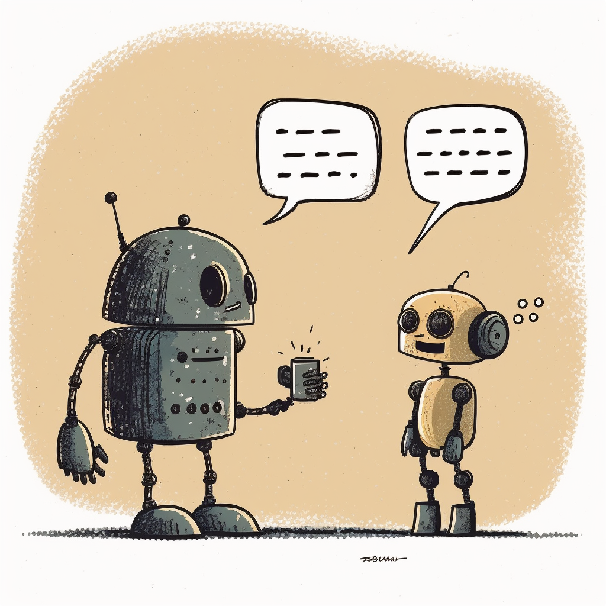

With the rise of the new AI models like GPT-4, being able to communicate with machines in a natural and intuitive way is becoming more and more important. Text-to-speech is a powerful technology that can help bridge the gap between humans and machines by enabling machines to speak and understand human language. In this blog post, we’ll explore some of the possibilities and libraries available for text-to-speech.
In Python, there are several modules available to easily convert text into speech. Today we are going to explore two of the most popular ones: pyttsx3 and gTTS.
pyttsx3 is a comprehensive library that provides support for multiple languages and custom voices, while gTTS is a simpler and easy to use option that uses Google Translate’s services to generate online speech.
The simplest way I could came up with was using the pyttsx3 library.
Initializing the engine and use the commands say and runAndWait would be the standard way to work with the API.
engine = pyttsx3.init()
engine.say("Oh wow! I can't believe I did this in less than 5 minutes")
engine.runAndWait()Once we have the engine, we can tune some parameters.
We can go through all the voices installed in our system with the following:
engine = pyttsx3.init()
voices = engine.getProperty('voices')
for voice in voices:
engine.setProperty('voice', voice.id)
engine.say('This is a test to know how each voice sounds like')
engine.runAndWait()And then we can set the desired voice like this:
When working with text-to-speech in Python, one potential issue you may encounter is the main program becoming stuck or unresponsive while the audio is being played. This can be a frustrating and limiting problem, especially if you’re working on a real-time application where responsiveness is crucial such as an AI voice assistant bot.
This is because the code that generates and plays the audio is typically executed in a sequential manner, meaning that the program has to wait for the audio to finish before moving on to the next task.
To overcome this problem, one solution is to use multiprocessing, which involves creating multiple processes to execute different parts of the program in parallel. That way, the audio generation and playback are handled by a separate process, allowing the main program to continue executing without being blocked.
To make this happen, we need to run the say or speak function in another thread and use is_pressed from the keyboard module as a callback.
import multiprocessing
import pyttsx3
import keyboard
def _say(text):
pyttsx3.speak(text)
def say(phrase):
if __name__ == "__main__":
p = multiprocessing.Process(target=_say, args=(text,))
p.start()
while p.is_alive():
if keyboard.is_pressed('esc'):
p.terminate()
else:
continue
p.join()
text = "this text is being read right now, and I can terminate it whenever I want"
for i in range(3):
say(text)If you’re looking for an alternative to pyttsx3, you might want to consider using the gTTS (Google Text-to-Speech) module along with the playsound library. Combining these two libraries is a quick way to add text-to-speech capabilities to your project.
from gtts import gTTS
from playsound import playsound
filename = 'my_gtts_file.mp3'
tts = gTTS("Oh wow! I can't believe this whas that easy")
tts.save(filename)
playsound(filename)Hopefully, this article has given you a brief overview of a couple text-to-speech options available in Python and how you can use them to improve the accessibility and user experience of your projects with just a few lines of code.